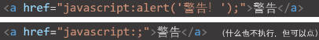
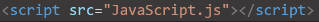

JavaScript简介 JavaScript的含义：java的脚本语言，但和java没有一点关系。 JavaScript的构成： 1.ECMAScript：JavaScript标准。 2.DOM：文档对象模型（操作网页）。 3.BOM：浏览器对象模型（操作浏览器）。 JavaScript的常用命令： JavaScript编写位置： 1.可以写到标签的onclick属性中，如: 2.可以写到a标签的href中，但要变换格式，如:  3.写到head中的script标签中： 4.写到外部js文件中，然后通过script标签和src属性引入（引入后里面再写js内容就没用了），如：  JavaScript的注意事项： 1.js中标志符严格区分大小写。 2.js中每一条语句以;结尾。 3.js中忽略多个空格和换行。 JavaScript的转义字符 1.用\转义，比如\"。 2.\n是换行。\t是制表符。 JavaScript的标志符 1.UTF-8里的内容加上字母、数字、_、$。 2.不可以数字开头。 3.不能是ES中的关键字和保留字。 变量的声明和赋值 1.声明变量，如：var a; 2.声明变量+赋值，如：var a = 123; 3.变量声明+赋值+运算，如：var a = 123+456;（注意js中整数运算基本精确，但小数会出现不精确） 4.赋值的进制（不管是什么进制，浏览器的显示都是十进制）： 1）16进制：前面加0x 2）8进制：前面加0 3）2进制：前面加0b（兼容性不是很好） 有关数据类型 种类： 1.string 字符串类型 2.number 数值类型 3.boolean 布尔值类型 4.null 空值类型 5.undefined 未定义类型 6.object 对象/引用类型 特殊类型： 1.infinity和-infinity：表示正无穷和负无穷。 2.nan：表示not a number。 检查数据类型： typeof 变量名 例如：console.log("typeof a"); 强制类型转换： 1.转换为string类型： 方式一： 方法：调用需要转换的变量的tostring()方法,例如：var b = a.tostring(); 注意： 1.调用方法不会改变原变量的值； 2.undefined和null没有tostring()方法，如果调用会报错。 方式二： 方法：调用string()函数,并将需要转换的变量作为参数传入，例如：var b = string(a); 原理：对于number和boolean实际上就是调用了tostring()方法，但是对于null和undefined，是直接转换为"null"和"undefined"。 方式三： 方法：将变量和空串相加，例如：var b = a + ''; 原理：利用了任何变量和字符串相加结果都变成字符串。 2.转换为number类型： 方式一： 方法：调用number()函数,并将需要转换的变量作为参数传入，例如：var b = number(a); 说明： 1.转换string时，如果含有非数字内容，则转换为nan。 2.转换string时，如果是一个空串或者全是空格，则转换为0。 3.转换boolean时，如果是true，则转换为1。 4.转换boolean时，如果是false，则转换为0。 5.转换null时，转换为0。 6.转换undefined时，转换为nan。 方法二： 方法：调用parseint()函数或者parsefloat()函数,并将需要转换的变量作为参数传入，例如：var b = parseint(a); 注意：parseint()和parsefloat()可以指定第二个参数设置传入参数的进制，例如：var b = parseint(a,16); 原理： 1.转换string时，parseint()函数会从左往右开始读数，读到非数字为止就不读了；parsefloat()函数会从左往右开始读数，读到一个小数点会继续读，读到第二个小数点或者非数字时就不读了。 2.转换非string时，parseint()函数和parsefloat()函数会先把其转换为string然后重复上面的操作。 方法三： 方法：调将变量和减乘除做值不变的运算，例如：var b = "123"-0; 原理：利用了任何变量做减乘除时结果都会变成number。 方法四： 方法：加一个+号，例如：var b = +"123"; 原理：利用了非number加上+号直接转换为number的特点。 3.转换为boolean类型： 方式一： 方法：调用boolean()函数,并将需要转换的变量作为参数传入，例如：var b = boolean(a); 说明： 1.转换数字时，除了0和nan为false，其余都为true。 2.转换string时，除了空串为false，其余都为true。 3.转换null和undefined时，转换为false。 4.转换object时，转换为true。 有关运算符 种类： 一元运算符： 1.typeof：以字符串的形式返回变量的数据类型。 2.+：不会对number产生任何影响，但对非number会将其转换为number。 3.-：对number取反，对非number将其转换为number再取反。 二元运算符： 1.+： 1）不是number的变量和数字相加时会将其先转换为number（除了string类型）。 2）任何值和字符串相加都变为字符串。 3）字符串相加会拼接。 2.-： 1）不是number的变量和数字相减时会将其先转换为number。 3.*： 1）不是number的变量和数字相乘时会将其先转换为number。 4./： 1）不是number的变量和数字相除时会将其先转换为number。 5.%：模运算（取余数）